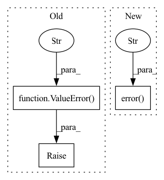

Pattern ID :1072
Before Change
// Sanity check command line arguments
if args.batch_size <= 0:
raise ValueError(f"Batch size must be at least one. "
f"Got batch size = {args.batch_size} instead." )
// Better safe than sorry -- don"t overwrite existing files
if args.out is not None and Path(args.out).is_file():
raise FileExistsError(f"Output file {args.out} already exists.")After Change
logger.error(f"Output file {args.out} already exists.")
sys.exit(1)
elif args.phase == "infer" and (Path(args.out).is_dir() or args.out.endswith("/")):
logger.error(f"Output path must be a file during inference, "
f"but got a directory instead: {args.out}" )
sys.exit(1)
// Set up device
args.device = set_device(args.device)In pattern: SUPERPATTERN
Frequency: 5
Non-data size: 3
Instances Fragment ID: 5371555
Project Name: univiecube/deepnog
Commit Name: 3b3ebee683d8346666ebee255ed721e33fde038f
Time: 2020-07-07
Author: sci@feldbauer.org
File Name: deepnog/client/client.py
M Class Name: AnonimousClass
N Class Name: AnonimousClass
M Method Name: _start_prediction_or_training(1)
N Method Name: _start_prediction_or_training(1)
M Parent Class:
N Parent Class:
M File Name: deepnog/client/client.py
N File Name: deepnog/client/client.py
M Start Line: 253
M End Line: 263
N Start Line: 255
N End Line: 282
Before Change
logger = get_logger(__name__, verbose=args.verbose)
if args.n_epochs <= 0:
raise ValueError(f"Number of epochs must be greater than or equal "
f"one. Got n_epochs = {args.n_epochs} instead." )
out_dir = Path(args.out)
logger.info(f"Output directory: {out_dir} (creating, if necessary)")
out_dir.mkdir(parents=True, exist_ok=True)
// Add random letters to files to avoid name collisionsAfter Change
logger = get_logger(__name__, verbose=args.verbose)
if args.n_epochs <= 0:
logger.error(f"Number of epochs must be greater than or equal "
f"one. Got n_epochs = {args.n_epochs} instead." )
sys.exit(1)
out_dir = Path(args.out)
logger.info(f"Output directory: {out_dir} (creating, if necessary)")
out_dir.mkdir(parents=True, exist_ok=True) Fragment ID: 5371554
Project Name: univiecube/deepnog
Commit Name: 3b3ebee683d8346666ebee255ed721e33fde038f
Time: 2020-07-07
Author: sci@feldbauer.org
File Name: deepnog/client/client.py
M Class Name: AnonimousClass
N Class Name: AnonimousClass
M Method Name: _start_training(3)
N Method Name: _start_training(1)
M Parent Class:
N Parent Class:
M File Name: deepnog/client/client.py
N File Name: deepnog/client/client.py
M Start Line: 368
M End Line: 381
N Start Line: 384
N End Line: 398
Before Change
if 0.0 < args.confidence_threshold <= 1.0:
threshold = float(args.confidence_threshold)
else:
raise ValueError(f"Invalid confidence threshold specified: "
f"{args.confidence_threshold} not in range "
f"(0, 1]." )
elif hasattr(model, "threshold"):
threshold = float(model.threshold)
logger.info(f"Applying confidence threshold from model: {threshold}")
else:After Change
if 0.0 < args.confidence_threshold <= 1.0:
threshold = float(args.confidence_threshold)
else:
logger.error(f"Invalid confidence threshold specified: "
f"{args.confidence_threshold} not in range (0, 1]." )
sys.exit(1)
elif hasattr(model, "threshold"):
threshold = float(model.threshold)
logger.info(f"Applying confidence threshold from model: {threshold}") Fragment ID: 5371556
Project Name: univiecube/deepnog
Commit Name: 3b3ebee683d8346666ebee255ed721e33fde038f
Time: 2020-07-07
Author: sci@feldbauer.org
File Name: deepnog/client/client.py
M Class Name: AnonimousClass
N Class Name: AnonimousClass
M Method Name: _start_inference(3)
N Method Name: _start_inference(1)
M Parent Class:
N Parent Class:
M File Name: deepnog/client/client.py
N File Name: deepnog/client/client.py
M Start Line: 269
M End Line: 365
N Start Line: 288
N End Line: 381
Before Change
https://www.ncbi.nlm.nih.gov/books/NBK3799///catalog.Title_Abbreviation_ta
if "&" in nlm_ta:
raise ValueError(
"Ampersands not allowed in the NLM title abbreviation. "
f"Try unescaping HTML characters first. Got:\n{nlm_ta}"
)
// The "format=text" parameter only matters when no result was found. With
// this parameter the returned text will be an empty string. See the
// corresponding check further below. Without this parameter the output isAfter Change
)
footer = "</pre>"
if not text.startswith(header) or not text.endswith(footer):
logger.error(f"Unexpected response for parameters \n{params}" )
return None
text = html.unescape(text[len(header) - 5 :]).strip()
// Empty text means topic abbreviation was not found. See comment about the Fragment ID: 5371559
Project Name: bluebrain/search
Commit Name: 266835be2ff7b5452e61ebbb48bf48e9b38d33b0
Time: 2021-12-22
Author: 47669575+EmilieDel@users.noreply.github.com
File Name: src/bluesearch/database/topic.py
M Class Name: AnonimousClass
N Class Name: AnonimousClass
M Method Name: request_mesh_from_nlm_ta(1)
N Method Name: request_mesh_from_nlm_ta(1)
M Parent Class:
N Parent Class:
M File Name: src/bluesearch/database/topic.py
N File Name: src/bluesearch/database/topic.py
M Start Line: 53
M End Line: 104
N Start Line: 55
N End Line: 99
Before Change
def set_global_log_level(log_level="NOTSET"):
if log_level is None or log_level not in ("NOTSET", "DEBUG", "INFO", "WARNING", "ERROR", "CRITICAL"):
raise ValueError(
"Please specify a valid log level from: "
""NOTSET", "DEBUG", "INFO", "WARNING", "ERROR" or "CRITICAL""
)
else:
log.setLevel(log_level)
for h in log.handlers:
h.setLevel(log_level)After Change
if log_level is None:
log.warning("set_global_log_level failed. Log level not changed.")
elif log_level not in ("NOTSET", "DEBUG", "INFO", "WARNING", "ERROR", "CRITICAL"):
log.error(
"set_global_log_level failed. Log level not changed."
"Please specify a valid log level from: "
""NOTSET", "DEBUG", "INFO", "WARNING", "ERROR" or "CRITICAL""
)
else:
log.setLevel(log_level)
for h in log.handlers:
h.setLevel(log_level) Fragment ID: 5371562
Project Name: ourownstory/neural_prophet
Commit Name: a5af2e2ef499a1b5a21947eeab3ad971248023bc
Time: 2020-10-16
Author: ourownstory@users.noreply.github.com
File Name: neuralprophet/__init__.py
M Class Name: AnonimousClass
N Class Name: AnonimousClass
M Method Name: set_global_log_level(1)
N Method Name: set_global_log_level(1)
M Parent Class:
N Parent Class:
M File Name: neuralprophet/__init__.py
N File Name: neuralprophet/__init__.py
M Start Line: 21
M End Line: 31
N Start Line: 21
N End Line: 34